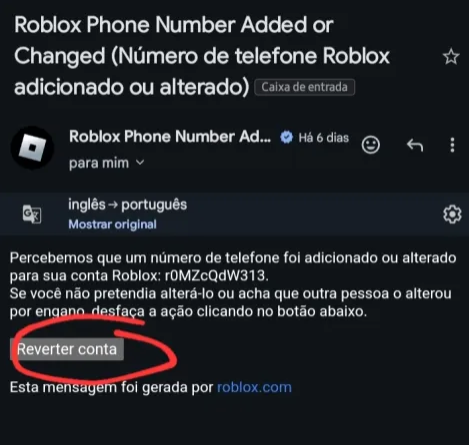
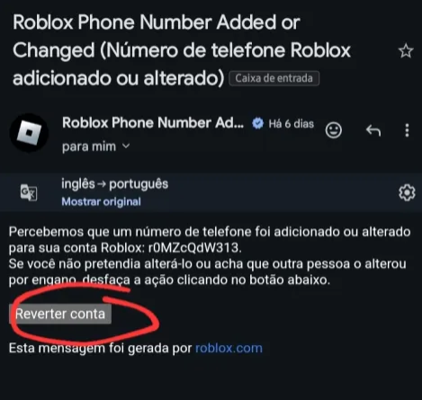

Metódo Roubar por trade de conta
:sirene: IMPORTANTE
:!: A Conta que você! for passar por trade precisa ser -13 de idade, caso contrário não vai conseguir recuperar
:!: Tenha um email verificado, e com verificação de 2 fatores ativo
:!: Se possível coloque códigos de recuperação
:nspin: 1° PASSO
Sempre desconfie esse tipo de trade tem diversos Scam
Fale normalmente com a vítima pra gerar confiança
Se ela recusar passar primeiro passe a sua
Lembre-se de ver se deixou tudo ativado para não perder a conta
:nspin: 2° PASSO
Depois que você ou ele tiver passado a conta
De maneira nenhuma bloqueie a vítima
Espere ele passar a dele ou você termine de
passar a sua, depois que já tiverem feito o trade
Mude a conta as informações que você pegou pelo trade
:nspin: 3° PASSO
Se a conta da vítima for -13 não faça trade com
Ela, porque ela consegue recuperar
Se a conta for +13 vá na idade e mude para
2014 feito isso o email vai sair e a vítima não
Vai ser notificada que o email saiu
:nspin: 4° PASSO
Verifique se mudou tudo senha,email,códigos
de recuperação literalmente tudo Após checar, apague mensagens
comprometedoras de você e bloqueie a Vítima
:nspin: 5° AVISO
Jamais use isso pra roubar dinheiro
Isso é um conselho meu a vítima pode muito
Bem conseguir se vingar ou até mesmo
Matar você
:nspin: 6° PASSO
Para recuperar sua conta cheque o seu Gmail
E procure esses emails e clique no link
Que foi circulado na print
espere 45 minutos ate recuperar se tiver trocado o email
da conta roubada pelo email e não pela idade, se não a vitima recupera
 


:diamond: Metódo Roubar por trade de conta V2
:sirene: IMPORTANTE
Texto importante da versão V2 aqui...
:nspin: Primeiro passo e último
Descrição final aqui...